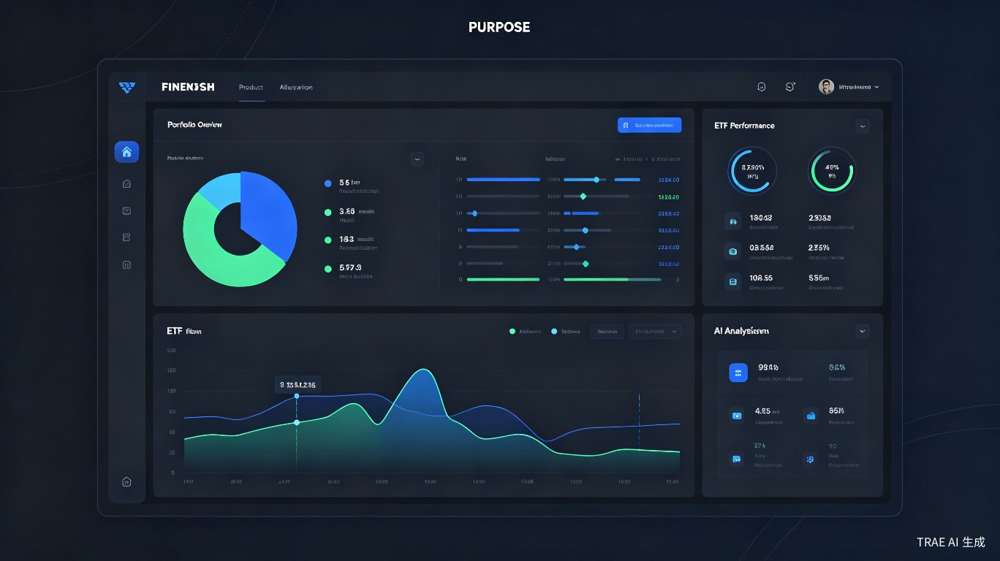
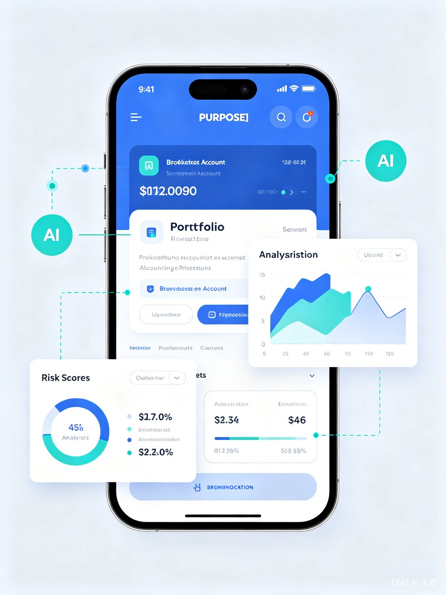

一、创意介绍
1.1 想解决什么问题
普通投资者在配置全球ETF时面临三大痛点：一是缺乏专业的资产配置知识，不知道该如何分散投资；二是无法及时评估持仓风险，往往在亏损后才意识到集中度过高；三是缺少动态调仓工具，无法根据市场变化及时调整策略。智投罗盘通过AI技术，让每个人都能拥有专业级的资产配置能力。
1.2 灵感来源
我身边很多朋友都在支付宝、券商APP上购买ETF基金，但大多数人只是"凭感觉"买入，没有系统的资产配置思路。有一次，一位朋友把持仓截图发给我，让我帮忙看看配置是否合理——我意识到，如果AI能看懂截图、自动分析持仓、给出专业建议，这将解决无数投资者的痛点。
1.3 产品形态
智投罗盘是一款Web应用 + 小程序，核心功能包括：用户上传支付宝或券商账户的持仓截图，AI自动识别持仓ETF、分析资产分布、评估风险暴露，并基于全球各大ETF的历史表现和当前市场环境，生成个性化的动态资产配置方案与调仓建议。

二、目标用户及痛点
2.1 核心用户群体
职场白领
有闲置资金想投资，但没时间研究，希望通过ETF实现资产增值
投资新手
刚接触ETF投资，缺乏资产配置知识，需要专业指导
进阶投资者
已有一定投资经验，希望优化持仓结构，提升风险调整后收益
家庭理财者
管理家庭资产，需要分散风险、稳健增值的长期配置方案
2.2 使用场景
场景一：定期持仓体检
用户每月打开智投罗盘，上传最新持仓截图，AI快速生成持仓分析报告，提示风险集中度、行业偏离、地域分布等问题。
场景二：调仓决策辅助
市场出现大幅波动时，用户上传截图后，AI结合当前市场环境给出调仓建议，如"建议减持科技股ETF 5%，增持债券ETF 3%"等具体操作。
场景三：新资金配置
用户有一笔新资金想投入，输入金额后，AI根据现有持仓和当前市场估值，推荐最优的加仓方案，避免重复配置。
2.3 当前痛点
- 信息碎片化：支付宝、券商APP只展示持仓盈亏，不提供资产配置分析视角
- 专业门槛高：现代投资组合理论（MPT）、风险平价等概念对普通投资者过于复杂
- 工具割裂：需要手动在Excel中整理持仓，再借助多个工具分析，流程繁琐
- 反应滞后：缺乏动态监控，往往在市场大跌后才意识到风险暴露过高

三、价值与意义
3.1 商业价值
ETF市场正处于高速增长期，但工具端严重滞后。智投罗盘填补了这一空白，通过SaaS订阅、高级策略付费、券商合作导流等模式实现商业化。目标在首年获取10万注册用户，付费转化率5%。
3.2 效率提升
传统方式下，投资者需要手动整理持仓、查询各ETF信息、计算权重、评估风险，耗时数小时。智投罗盘通过AI截图识别，30秒完成持仓录入，3分钟生成完整分析报告，效率提升60倍以上。
| 功能模块 | 传统方式耗时 | 智投罗盘耗时 | 效率提升 |
|---|---|---|---|
| 持仓信息录入 | 15-30分钟（手动输入） | 30秒（截图识别） | 30-60x |
| 资产配置分析 | 1-2小时（Excel计算） | 1分钟（AI生成） | 60-120x |
| 风险评估 | 需专业知识 | 实时自动计算 | 无限（降低门槛） |
| 调仓建议 | 依赖投顾或自学 | AI个性化推荐 | 无限（降低门槛） |
3.3 社会价值
智投罗盘致力于投资普惠化。通过AI技术将专业级的资产配置能力下沉到普通投资者，帮助更多人实现财富的稳健增长，减少因缺乏专业知识而导致的投资损失。长期来看，提升全民财商水平，促进资本市场健康发展。
核心理念：让每个人都能拥有私人资产配置顾问，用AI技术消除投资信息不对称。
四、产品功能详解
4.1 AI持仓截图识别
用户上传支付宝、同花顺、东方财富等平台的持仓截图，基于多模态大模型自动识别：
- ETF名称与代码识别（支持中英文混合）
- 持仓份额与市值提取
- 盈亏数据解析
- 多页截图自动拼接与汇总
4.2 多维度风险分析
集中度风险
检测单一ETF或行业权重是否过高，提示分散建议
地域风险
分析美股、A股、港股、新兴市场等地域分布
行业风险
穿透ETF底层资产，分析科技、医疗、金融等行业暴露
风格风险
评估价值/成长、大盘/小盘等风格因子偏离
4.3 动态资产配置引擎
基于全球主要ETF（如SPY、QQQ、VTI、VEA、VWO、BND、GLD等）的历史数据，结合当前市场环境：
- 战略配置（SAA）：根据用户风险偏好生成长期目标配置比例
- 战术配置（TAA）：基于动量、估值、宏观指标进行短期偏离调整
- 再平衡提醒：当实际配置偏离目标超过阈值时自动提醒
4.4 智能调仓建议
对比当前持仓与目标配置，生成具体的调仓操作清单：
示例调仓建议
▶ 减持 QQQ（纳斯达克100） 2.5万元
▶ 增持 BND（全美债券） 1.5万元
▶ 新增 VWO（新兴市场） 1万元
▶ 维持 VTI（全美股票）不变
预期效果：降低科技行业集中度从45%至30%，提升组合夏普比率约0.15
五、技术实现路径
5.1 核心技术栈
视觉大模型
基于GPT-4V/Claude 3等多模态模型实现截图文字识别与结构化提取
金融数据API
接入Yahoo Finance、Alpha Vantage等获取ETF实时行情与历史数据
风险模型
实现VaR、CVaR、最大回撤、夏普比率等专业风险指标计算
配置算法
均值方差优化、风险平价、Black-Litterman等经典资产配置模型
5.2 数据安全
用户持仓截图仅用于AI识别，不存储原始图片，仅保存提取后的结构化数据。采用端到端加密传输，支持本地模式（数据不上云）。
六、竞品分析
| 产品 | 截图识别 | 全球ETF支持 | 动态配置 | AI分析 | 免费使用 |
|---|---|---|---|---|---|
| 智投罗盘 | ✔ | ✔ | ✔ | ✔ | ✔ |
| 且慢（蛋卷基金） | ✘ | ✘ | ✔ | ✘ | ✔ |
| Morningstar | ✘ | ✔ | ✔ | ✘ | ✘ |
| Personal Capital | ✘ | ✔ | ✔ | 部分 | ✔ |
智投罗盘的核心差异化在于"截图即分析"的极致体验，以及针对中国投资者使用习惯的本土化设计。
七、发展规划
7.1 短期目标（0-6个月）
- 完成MVP版本开发，支持主流券商截图识别
- 接入10只核心全球ETF数据
- 获取1万种子用户，验证产品价值
7.2 中期目标（6-12个月）
- 扩展至50+全球ETF覆盖
- 上线小程序版本，降低使用门槛
- 推出高级订阅服务（自定义策略、实时提醒）
7.3 长期愿景（1-2年）
- 构建投资社区，用户可分享和跟随优质配置方案
- 与券商合作，实现一键调仓
- 拓展至股票、债券、REITs等更多资产类别
八、团队与资源
本项目依托TRAE Work强大的AI开发能力，单人即可快速完成MVP验证。所需核心资源：
- AI能力：TRAE Work / Claude / GPT-4V 多模态识别
- 数据源：Yahoo Finance API（免费）、Wind/Choice（进阶）
- 部署：Vercel / Cloudflare Pages 前端 + Python FastAPI 后端
- 存储：PostgreSQL + Redis